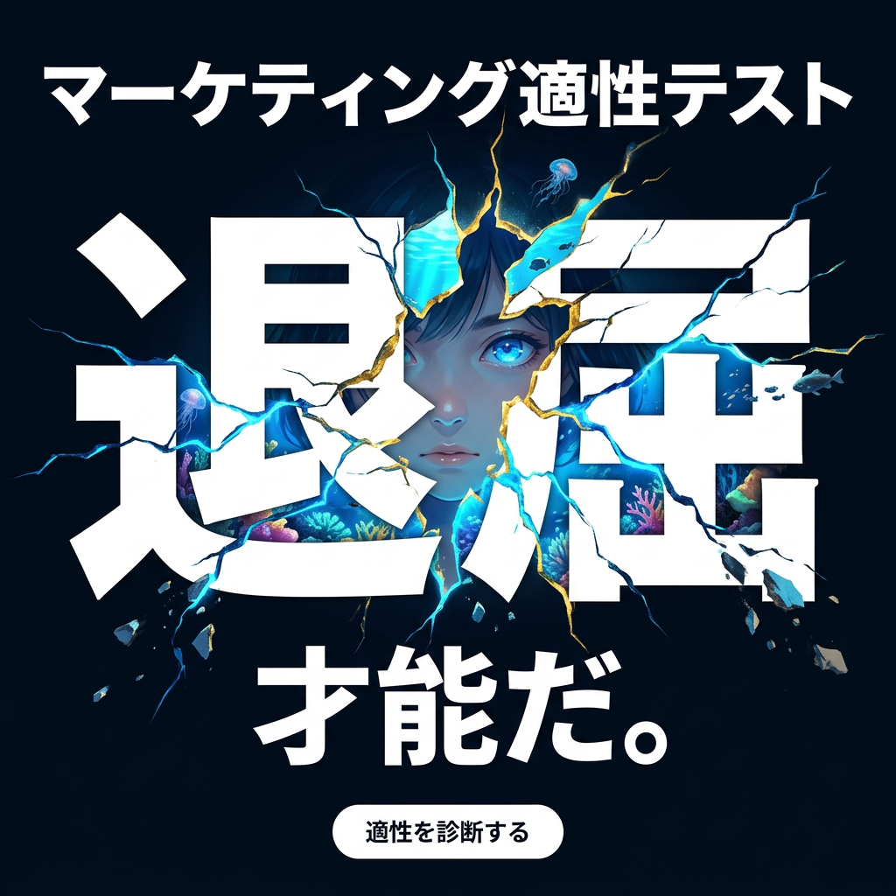
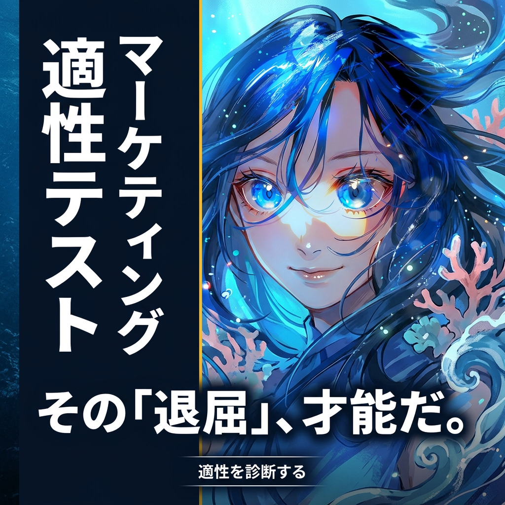
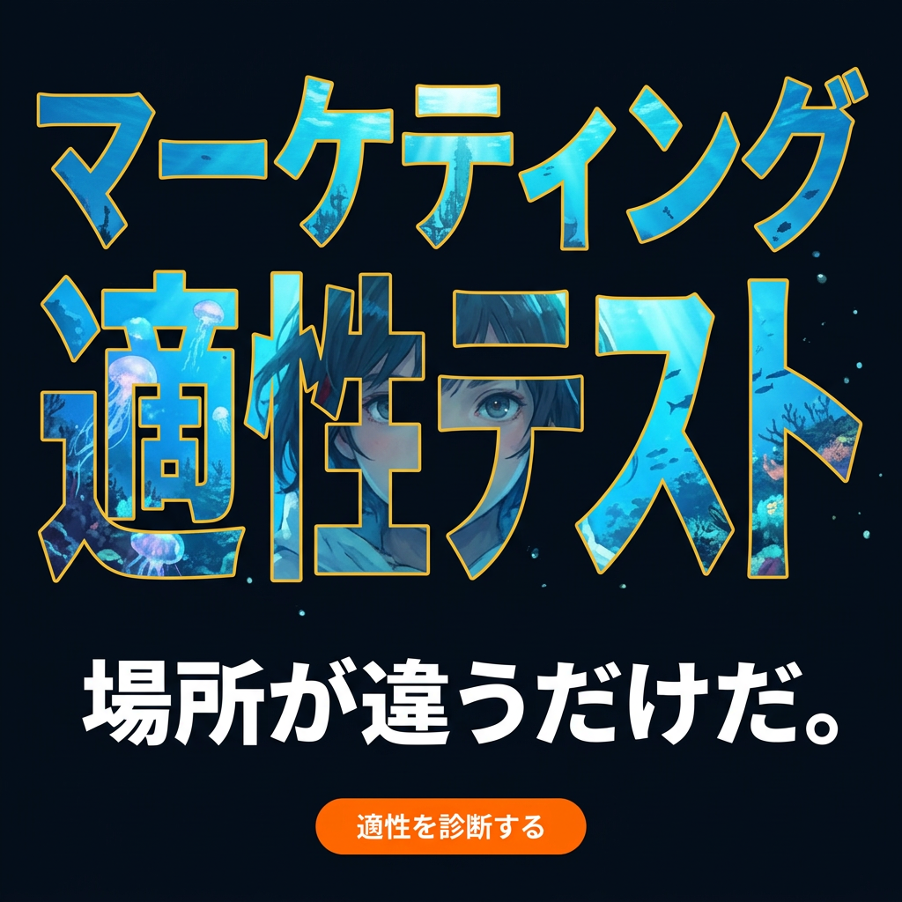
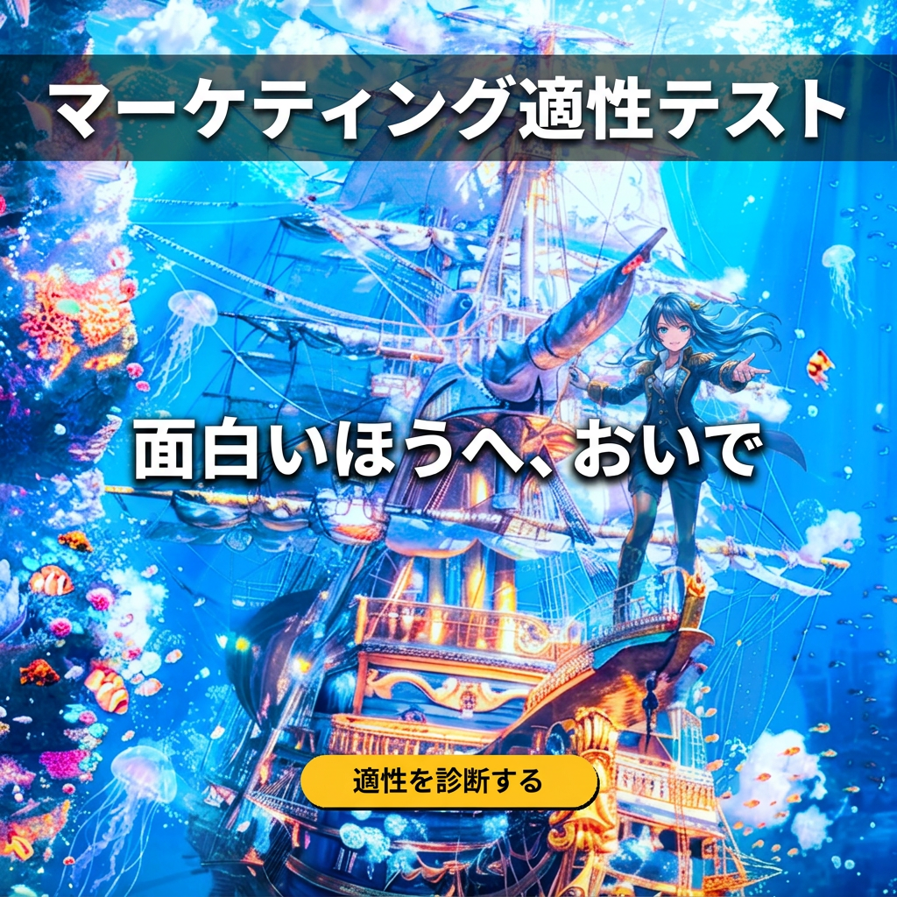
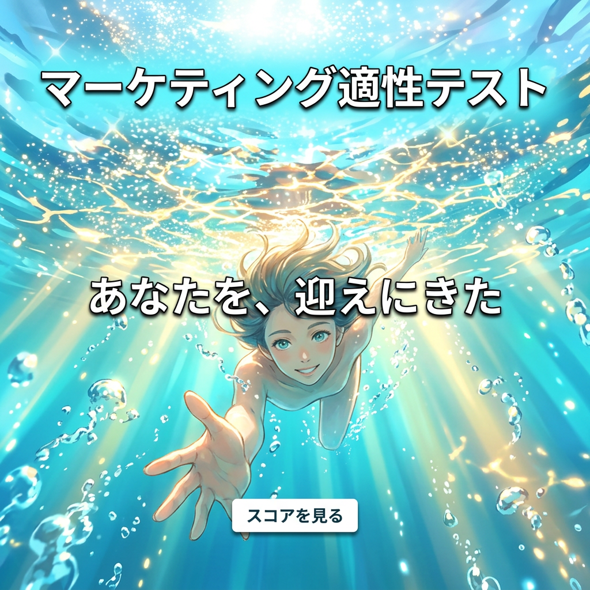
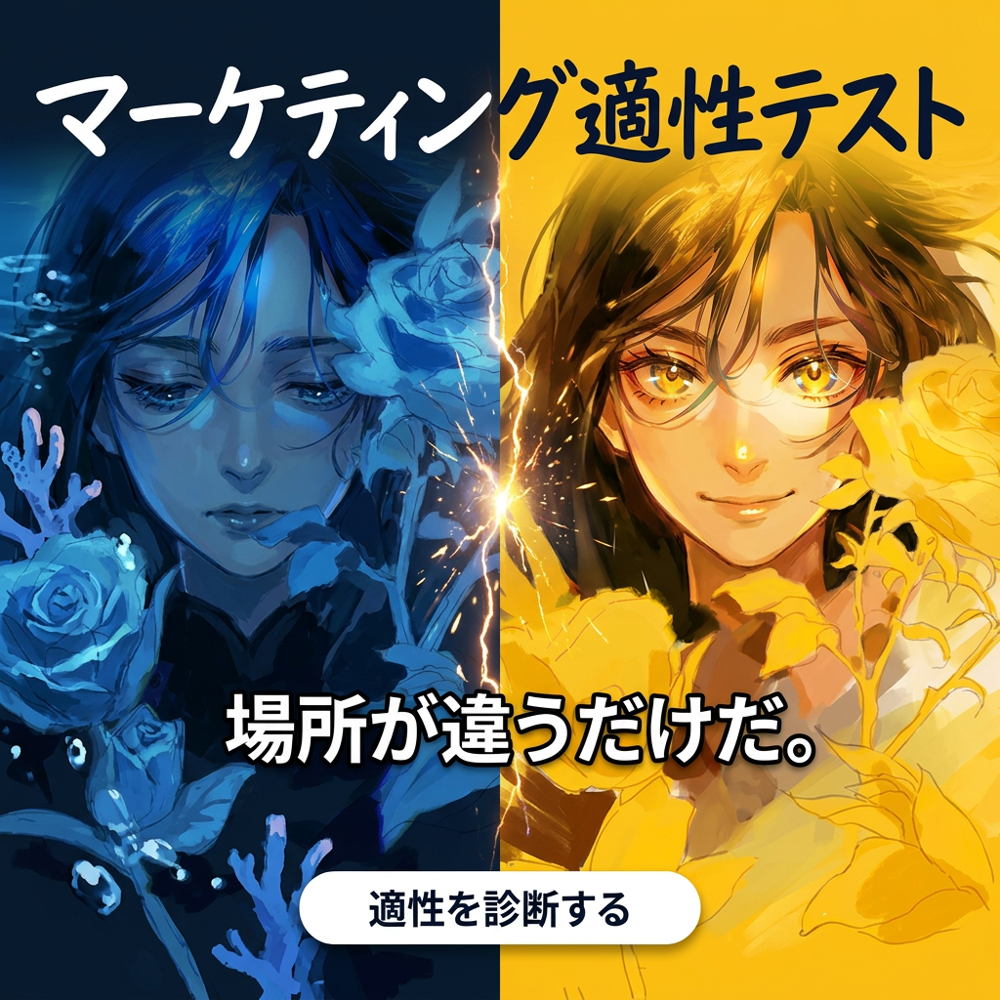
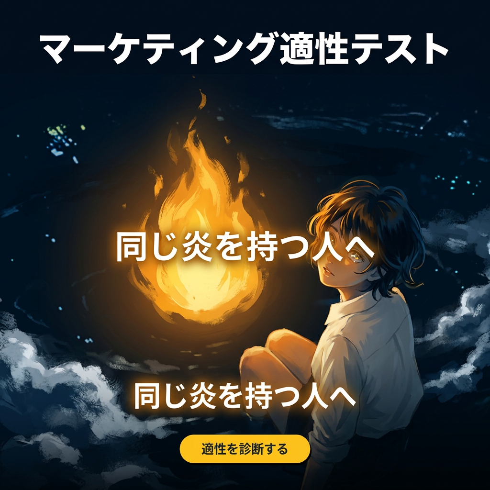
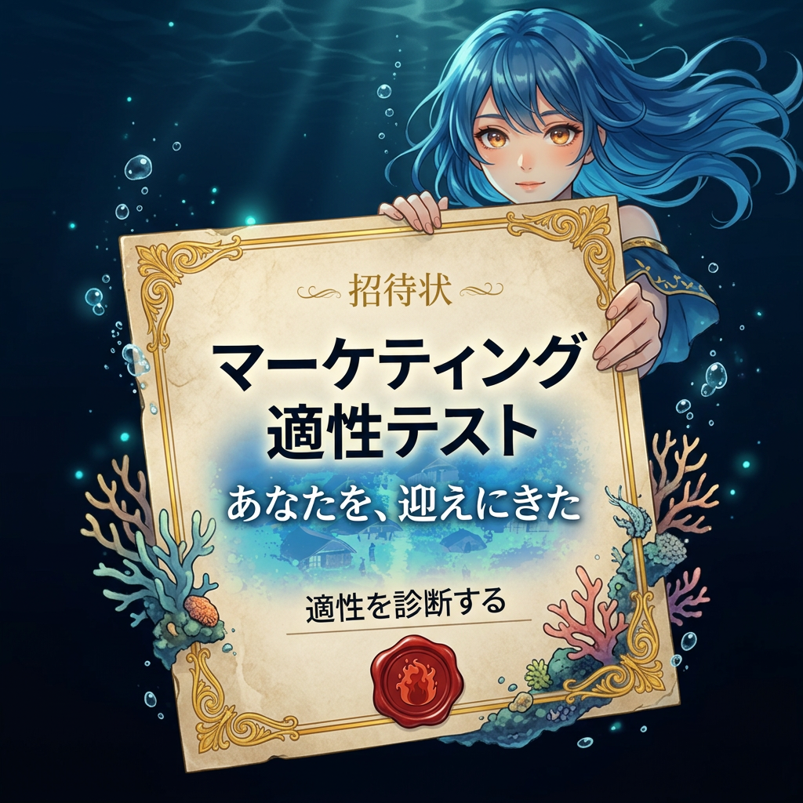
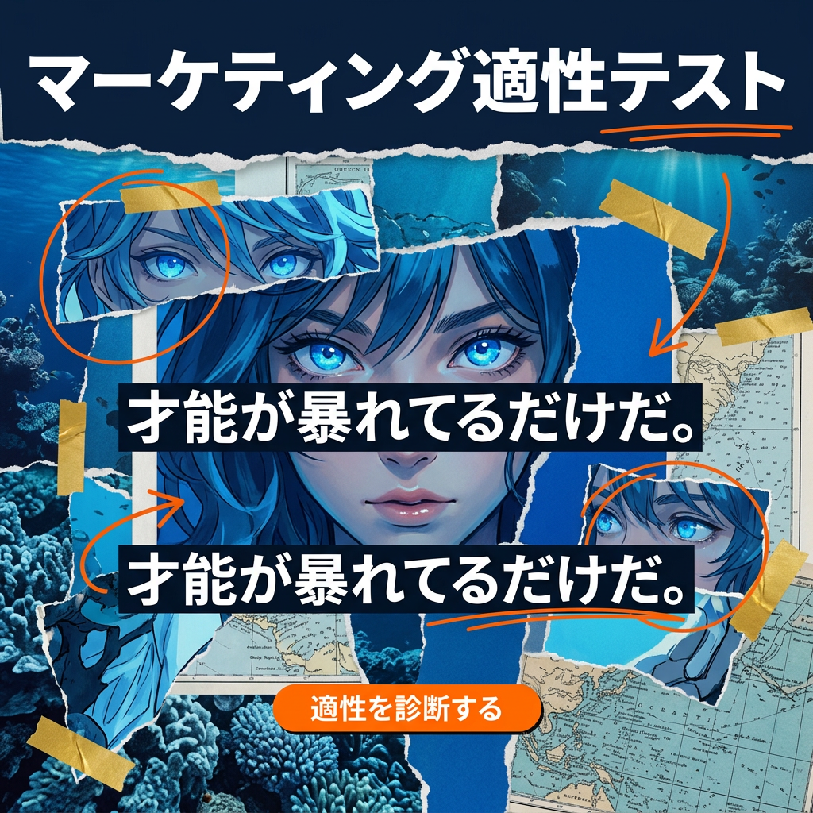
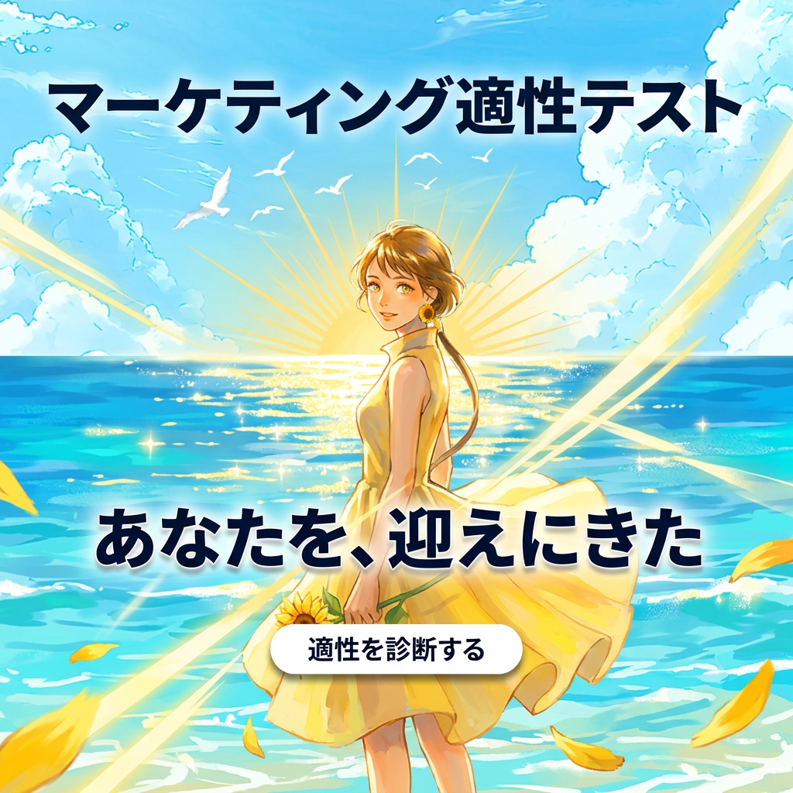

タイポ遊び × 伝わりやすさ × LP世界もっと踏襲

「退屈」が巨大に崩壊 → 割れ目の向こうから少女の瞳が覗く

LP深海少女のアイコンタクト × 縦書きタイポ — あなたを見つめる瞳

文字が海への窓 — 文字の中から少女がこちらを見つめる

LP帆船×船首の少女がこちらに手を差し伸べる — 冒険への招待

水面キラキラ×少女が手を差し伸べる — 明るいブルー系、アイコンタクト

青×金スプリット — 覚醒した少女がこちらを見つめる変容ストーリー

深海の少女と炎 — LP炎モチーフ、あなたを見つめる静かな力強さ

少女が招待状を差し出す — 深海に浮かぶ招待状、あなたへ

エディトリアルコラージュ — 少女のまなざしがアンカー、リッチで読みやすい

光の地平線 — 少女が振り向いて「おいで」、明るく壮大な可能性